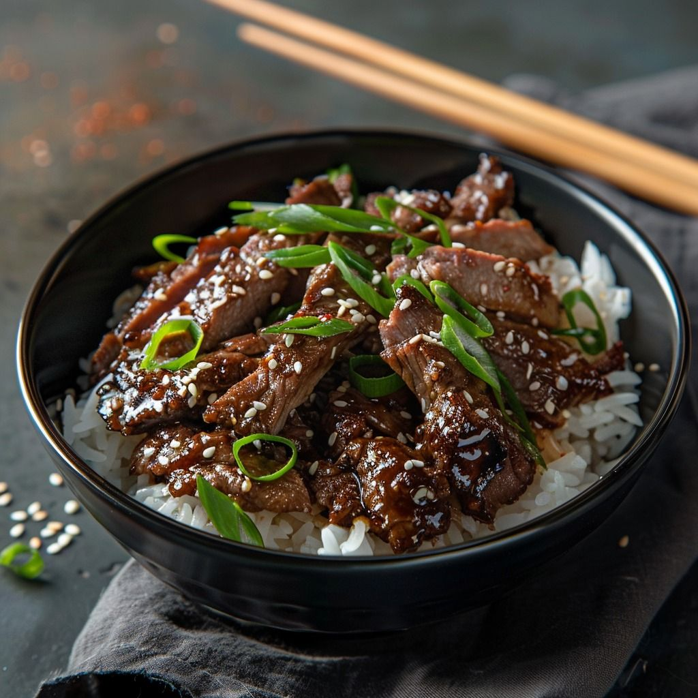

Bulgogi (Korean BBQ)
Back to Home
Bulgogi (Korean BBQ)

Bulgogi is one of the most well-known Korean dishes. It is very delicious and if you have tried this dish — you'll never forget it. Also, if you eat it with rice... So yummy. Try, you're gonna love it!
| Prep Time |
25 minutes |
| Cook Time |
10 minutes |
| Additional time |
1 hours |
| Total Time |
1 hour 35 mins |
| Servings |
4 |
Bulgogi (Korean BBQ)
- 1 cup soy sauce.
- ½ cup pear juice or white wine
- 3 tablespoons white sugar
- 2 tablespoons chopped garlic
- 1 teaspoon sesame oil.
- 1 teaspoon sesame seeds
- 1 tablespoon ground black pepper
- 1 teaspoon monosodium glutamate
- 1 (2 pound) beef rump roast, sliced into thin strips
Directions
- In a large bowl, mix together soy sauce, pear juice, sugar, garlic, sesame oil, sesame seeds, black pepper, and monosodium glutamate; add beef and onions. Stir to coat, cover, and refrigerate for 1 hour.
- Preheat a grill pan over high heat and brush with oil; add beef and onions. Cook, turning to brown evenly, for 3 to 6 minutes, or until done.